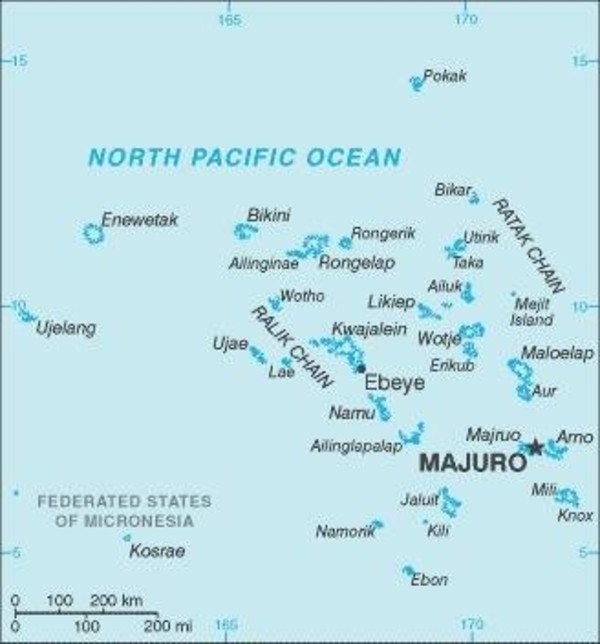

|
Marshall-szigetek |
 |
Bevezetés
A Marshall-szigetek Óceániában elhelyezkedő állam. Mikronézia szigetvilágában Hawaii és Ausztrália között félúton található. Két szigetcsoport: a Ratak- és Ralik-szigetlánc és több kis korallpad alkotja.
Az állam neve J. Marshall angol hajóskapitány nevét viseli, aki 1788-ban végzett kutatásokat a területen. 1991-ben nyerte el teljes függetlenségét. Legismertebb atolljai a Bikini- és az Eniwetok-atoll, melyek az amerikaiak atomfegyver kísérleteiről váltak híressé. Az ország gazdasága nagyban függ az USA által használt katonai támaszpontokért cserébe nyújtott segélyektől.
A lakosság főként földműveléssel és halászattal foglalkozik. .
Történelem
A Kr. e. 2. évezredben már lakott volt a terület.1914-ben Japán megszállta a szigeteket, és katonai támaszpontokat létesített.
1944. január 31-én a Kwajalein-atollról kiindulva az amerikaiak elfoglalták a szigeteket. 1947. július 18-án megalapították a Csendes-óceáni Gyámsági Területet, és az Amerikai Egyesült Államok közigazgatása alá rendelte az ENSZ. Az USA nukleáris fegyverek tesztelésére használta a Bikini- és Eniwatok-atollokat 1958-ig.
A kísérletekből hátramaradt radioaktív törmeléket a Runit-szigeten, a Kaktusz-kupola alá rakták le.1973-ban a szigetcsoport kilépett a Mikronéziát alkotó szigetek szövetségéből. 1979 május 1-jén az USA elismerte a Marshall-szigetek alkotmányát és kormányát, Amata Kabuát elnökké választották. (Ez a nap az ország nemzeti ünnepe, az alkotmány napja.)
A „Marshall-szigeteki Köztársaság” elnevezés 1982-ben vált hivatalossá. 1986. október 21-én az USA hivatalosan is 'szabadon társult' államává fogadta, függetlenedve a gyámsági területtől.
1990-ben az ENSZ megszüntette a gyámságot és elismerte független államként, majd 1991-ben felvette tagjai sorába a Marshall-szigeteki Köztársaságot.
Globális felmelegedés
A Marshall-szigetek az egyik legnagyobb elszenvedője a klímaváltozásnak,
hiszen az emelkedő tengerszint az egész ország létét sodorhatja veszélybe hamarosan.A tanulmány kifejti, hogy az alacsony tengerszint feletti magasságon fekvő korall-atoll szigetek vannak a legnagyobb veszélyben, ez talán nem is olyan meglepő. A Marshall-szigetek több ezer lakója például elég nagy veszélynek van kitéve: ez az állam Hawaii és Ausztrália között félúton található Mikronézia szigetvilágában, és
elég alacsonyan fekszik ahhoz, hogy már egy kisebb mértékű tengerszint-emelkedés is a lakott területek végét jelentheti.
2050-es évekre tehető a komoly problémák megjelenése. A kutatók szerint a korábbi számítások nem vették figyelembe a viharok szerepét,
amelyek olyan hullámokat kelthetnek a tengeren, hogy az iható édesvízkészlet veszélybe kerülhet.